¡Hola! Hoy vuelvo a escribir en este blog para contaros una forma que conozco para mantener los recursos del estado de Terraform, controlados por este propio software. ¡Os cuento cómo lo hago!
¿Cuál es el problema?
Yo suelo trabajar con Terraform de esta manera:
- Creo mi S3
- Creo mi proveedor
- terraform Init
- …
Sin embargo, esta forma no me convence, ya que he tenido que seguir gestionando algunos recursos manualmente o importándolos después, lo que implica un mayor esfuerzo, y eso no me gusta. Así que, me encontré con un código y resultó ser exactamente lo que necesitaba. Después de algunas pruebas, voy a mostrar cómo eliminar todo ese proceso manual.
Preparación de los archivos y requisitos
El principal requisito es que cuentes con un perfil de AWS con credenciales válidas. En mi caso, tengo credenciales realmente permisivas debido a la naturaleza del código de Terraform que necesito hacer, pero puedes encontrar problemas si tienes acceso restringido.
En cuanto a la estructura de archivos, necesitarás estos archivos:
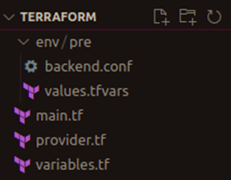
Empecemos explicando los 3 archivos de la carpeta raíz:
El archivo principal contiene todos los recursos necesarios para el estado remoto. Asegúrate de que la configuración es privada.
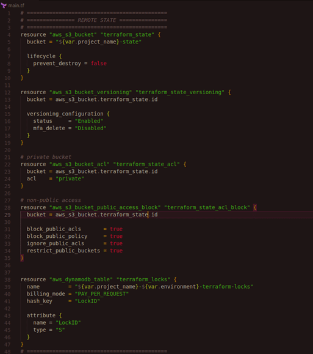
El archivo del proveedor contiene la configuración de Terraform. Nos interesa la sección «backend», la cual ahora mismo es local, pero cambiaremos a s3 después de la primera ejecución. También, puedes establecer una versión para el proveedor.
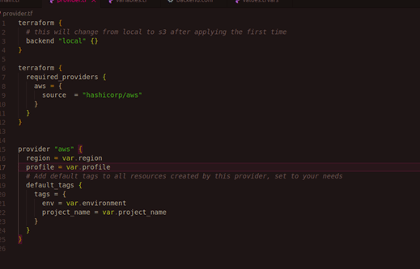
En lo que respecta al archivo de variables, no hay mucho que explicar.
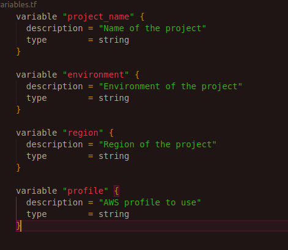
Una vez pasamos a la carpeta env, tenemos que:
El archivo backend tiene la configuración para el backend definida en el archivo del proveedor; usaremos esta configuración cuando pasemos al backend s3. Ten en cuenta que estos valores deben coincidir con los nombres de los recursos creados en el archivo principal.
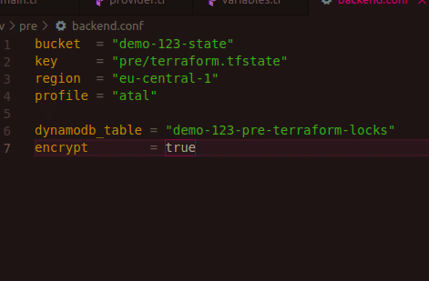
Por último, el fichero de valores:
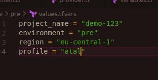
A tener en cuenta
A veces, cuando estás trabajando con plazos de entrega, el estrés te puede jugar una mala pasada y puedes ignorar algunas cosas básicas. Aquí enumero algunas de las que creo que se pueden pasar por alto:
- ¡Personaliza tu perfil en valores y backend! Asegúrate de que es el mismo.
- Cuidado con la región y las otras variables.
- ¡Cuidado con subir tu estado local a git! Cuando migres el estado, el archivo local no se borrará.
Eso es más o menos todo, esos pequeños detalles pueden costarte tiempo. También ejecuto esto con perfiles, pero puedes preferir usar variables env y eliminar el perfil.
¡Manos a la obra!
Después de que todo haya sido configurado, puedes proceder a init y aplicar localmente:
Init:
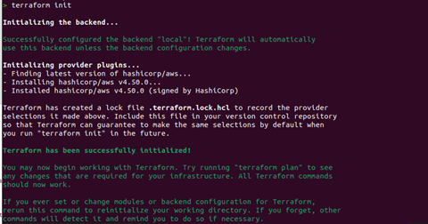
Aplicar:
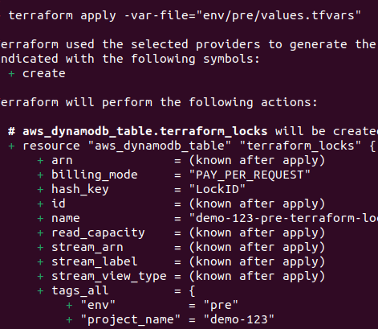
Después de aplicar con éxito el código Terraform, migraremos el estado a S3, cambiando el provider.tf > terraform > backend de local a s3:
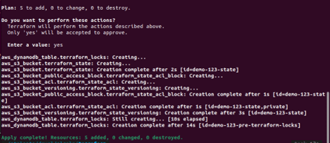
Y lanza init como sigue:
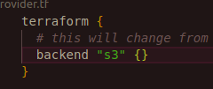
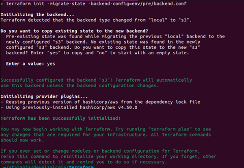
¡Listo! Ahora tienes tus recursos de estado Terraform creados y utilizados por Terraform sin crear ningún recurso manualmente, lo que es de gran utilidad para el arranque rápido de proyectos Terraform.
Algunos extras
Si fueras a destruir tu proyecto, recomiendo migrar el estado localmente primero y luego aplicar el destroy. Además, mantén el control de la variable «prevent_destroy» en el archivo main.tf.